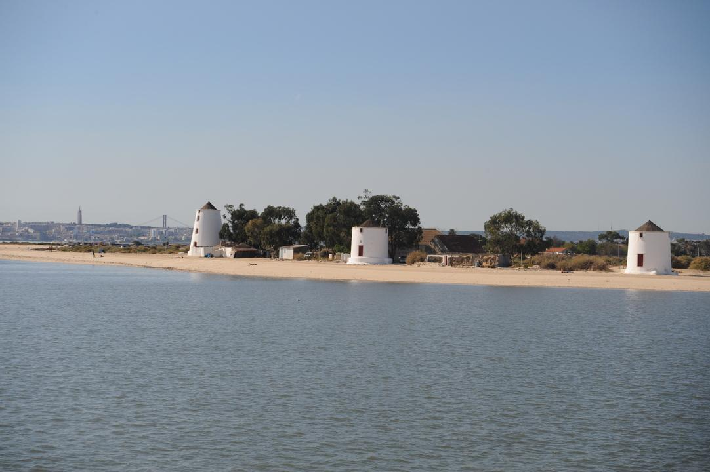
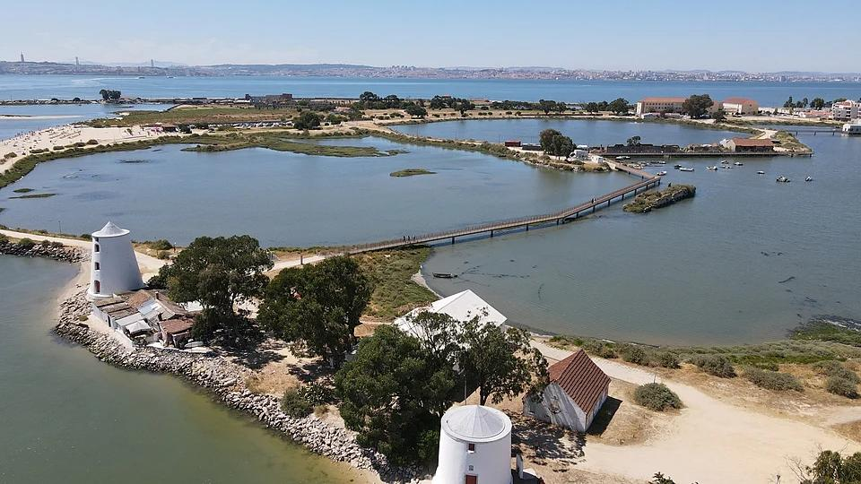
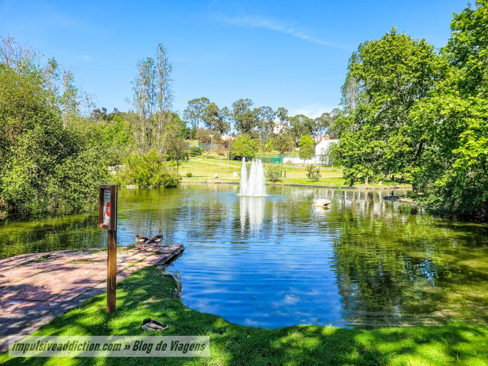
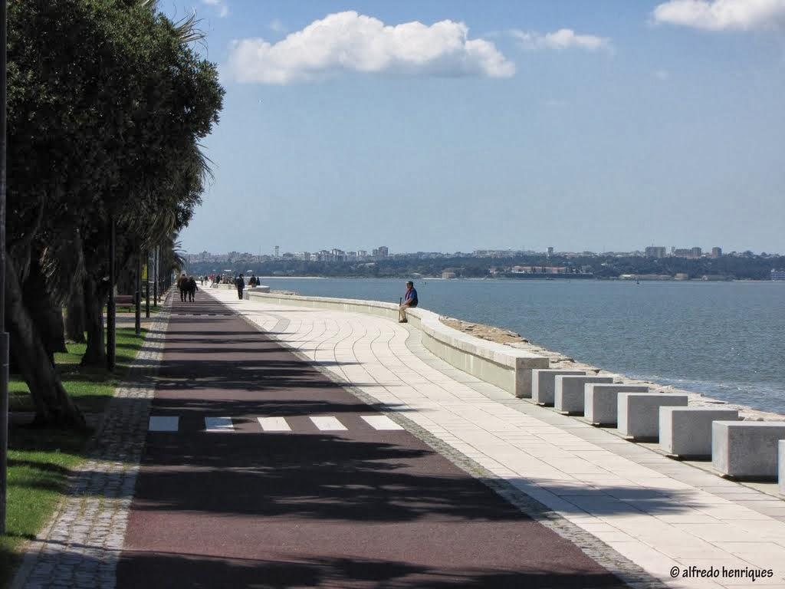
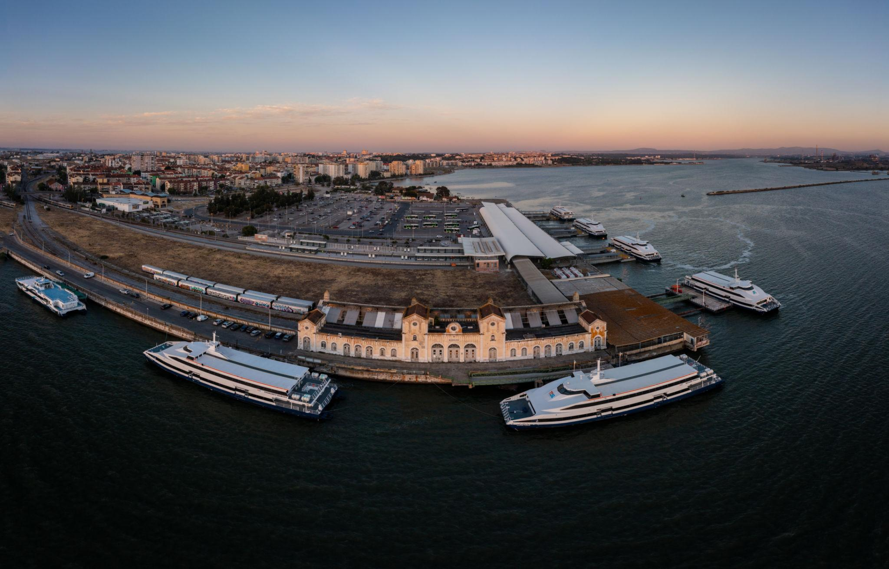
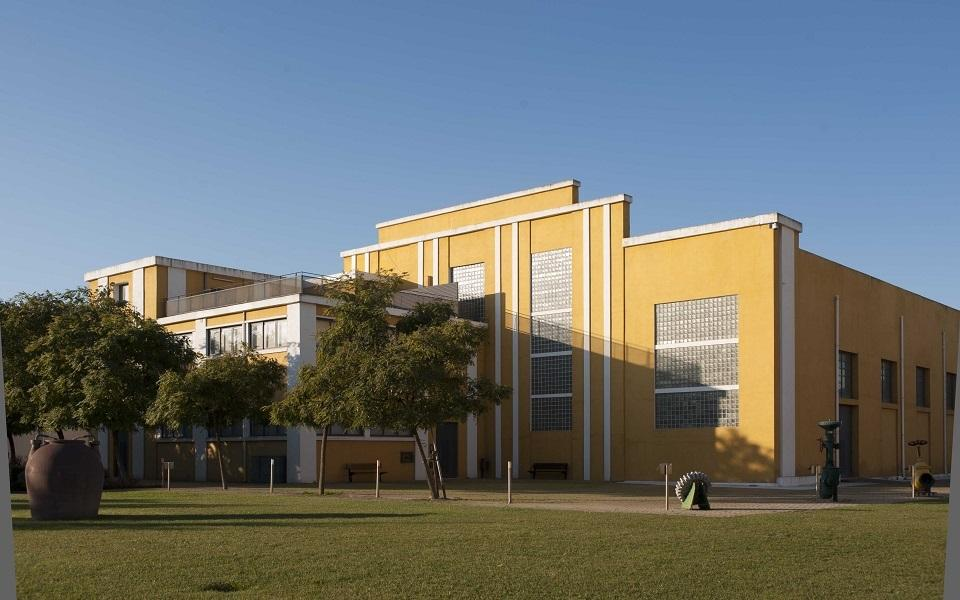
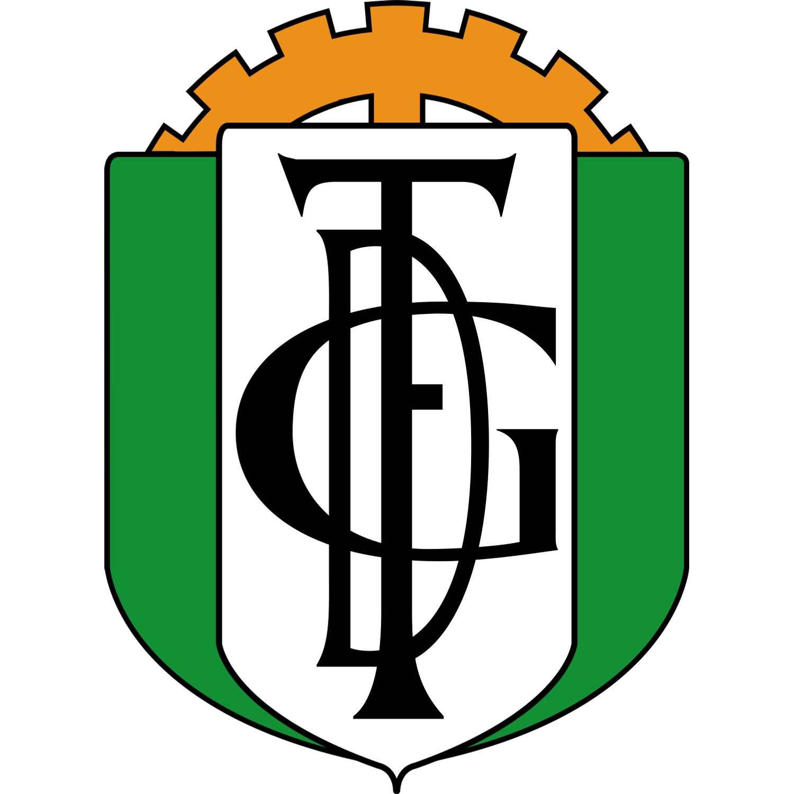
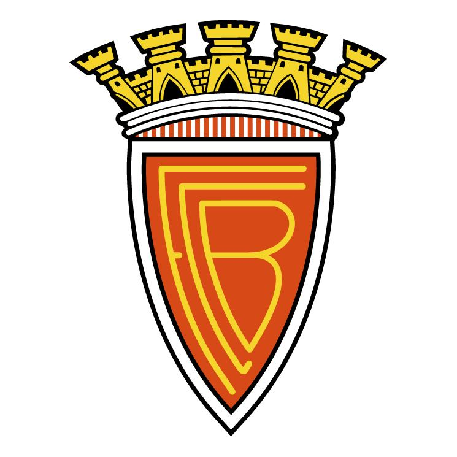

Fotografias








A rivalidade Fabril-Barreirense
O GD Fabril e o FC Barreirense são dois clubes históricos do Barreiro. A rivalidade futebolística entre os dois faz parte da tradição desportiva da cidade.
Barreiro, uma cidade entre o Tejo, a indústria e a história.
Vídeo
Poesia
No Barreiro nasce o dia,
Com o Tejo a espelhar a luz.
Alburrica guarda o vento,
Cada moinho o tempo conduz.
Entre fábricas e caminhos,
Há histórias para contar.
Fabril e Barreirense em campo,
Fazem a cidade vibrar.
Descobre o Barreiro
Uma cidade entre o Tejo, a história e a tradição.
Barreiro junto ao Tejo
Uma cidade com identidade, história e ligação ao rio.